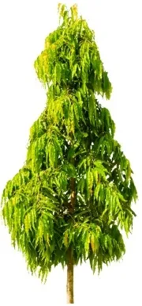

Overview of Kashtadaru
Kashtadaru – Polyalthia longifolia is commonly referred to as False Ashoka due to its similarity to Ashoka – Saraca indica. It's notably used to reduce noise pollution and is planted along highways for this reason.
Botanical Information
- Botanical Name: Polyalthia longifolia Benth Hook.f.ver. Pandurata
- Family: Annonaceae (Sitaphala Kula)
Regional Names
- English: Mast Tree, False Ashoka, Buddha Tree, Cemetery Tree
- Hindi: Devadari, Nakali Ashoka
- Kannada: Gauri, Habbe, Ubbina Mara
- Tamil: Nadunar, Nettilinkam (நெட்டிலிங்கம்)
- Telugu: Naramamidi
- Malayalam: AraNamaram (അരണമരം)
- Gujarati: Asopalav
- Urdu: Asupal
- Bengali: Debdaru
- Indonesian: Glodogan Tiang
- Sanskrit: Devadari
Major Chemical Constituents
- Stem Bark: Leucocyanidin, Proanthocyanidin (I), α-Sitosterols, Campesterol
- Leaf Extract: Alkaloids, Tannins, Saponins, Glycosides
- Antioxidant Principles: Quercetin, Quercetin-3-O-ß-glucopyranoside, Kaempferol-3-O-α-rhamnopyranosyl-(1→6)-ß-galactopyranoside, Kaempferol-3-O-α-rhamnopyranosyl-(1→6)-ß-glucopyranoside, Rutin, Allantoin
Habitat
Native to: Sri Lanka, but widely planted on road sides throughout India.
Medicinal Qualities
- Guna (Qualities): Laghu (Light), Rooksha (Dry)
- Rasa (Taste): Tikta (Bitter), Katu (Pungent)
- Vipaka: Katu (Pungent taste after digestion)
- Veerya: Ushna (Hot potency)
- Effect on Tridosha: Kapha Pittahara (Balances Kapha and Pitta Dosha)
Part Used & Dosage
- Part Used: Stem bark, Leaves
- Dosage: Decoction (Kashayam) – 50-100 ml per day, or as directed by a doctor
Uses
- Krumi: Treats worm infestation in wounds and intestines
- Meha: Useful for urinary tract disorders and diabetes
- Jwara: Effective in fever
- Kushta: Treats skin diseases
- Blood Pressure: Useful in reducing blood pressure
- Constipation: Mild laxative effect aids in constipation
Side Effects
Side Effects: There are no known side effects. Seek medical guidance during pregnancy and lactation.